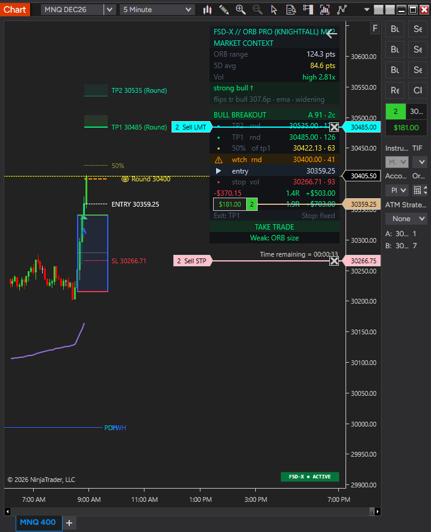

Knightfall is live
on NinjaTrader.
Native. All in one.
The same graded ORB engine, rebuilt as a native NinjaTrader 8 strategy. Let it trade hands-free, or trade it yourself off the same chart. One script.
No webhooks. No alert setup. No third-party bridge between your chart and your account.
Approved by NinjaTrader. Live now as a download for members, from the NinjaTrader hub on the site.
Already a member? Go to the NinjaTrader hub → · See the membership →

Watch it trade on NinjaTrader.
Variant 2 Runner on a live MNQ chart: the opening range, the breakout grade, the entry, stop and targets, and the trailing stop taking over after TP1.

Demo footage for illustration. Futures trading involves substantial risk of loss. More videos in the Knowledge Base →
Everything in one place.
On TradingView, hands-free trading means a paid plan for webhooks, alert setup, and a bridge service to reach your broker. On NinjaTrader, the strategy lives on the platform that places the order.
One strategy, two ways to run it. Let it take and manage the trade, or keep the read and click the trade yourself.
Orders go from NinjaTrader to the account you connect. No webhook, no alert message, no service in the middle to pay for or break.
Stop and target sit on the chart as working orders. You see exactly what's live at your account, right next to the setup.
The Knightfall read you know: every breakout graded, ORB size checked against its 5-day average, stops and targets placed by the same rules.
The dashboard shows what's at risk and the R to each target before you're in — sized to the risk setting you choose.
One platform for charting, the read and execution. Less to set up, less to monitor, fewer places for something to go wrong.
The whole read. One panel.
The Market Context panel carries over from TradingView, rebuilt for NinjaTrader. Top to bottom, it answers the questions you'd otherwise be asking yourself at 8:45.
Today's ORB range against the 5-day average, volume, and the trend read. Is this a morning worth trading?
Breakout direction, letter grade and score. The grade sets the size.
Entry, stop, TP1, TP2, the 50% mark and watch levels — each tagged with its source, like a round number or volatility.
Take the trade or skip it, with any weak spots called out so you know what you're signing up for.
Built. Approved. Live.
Third-party NinjaTrader add-ons go through NinjaTrader's review before they ship. Knightfall passed it, and it launched to members on Friday, October 23.
-
✓
Built for NinjaTrader 8
Strategy, dashboard and on-chart orders.
-
✓
Running on sim
Hands-free and manual modes on a NinjaTrader sim account.
-
✓
Submitted to NinjaTrader
Through NinjaTrader's add-on review.
-
✓
Approved by NinjaTrader
Passed NinjaTrader's add-on review. Early-access members tested it first.
-
Live for members · Oct 23
Download from the member hub. Setup guide included.
Quick answers.
Is it out?+
Yes. It launched Friday, October 23, 2026. Members download it from the NinjaTrader hub on the site.
Will it be part of the membership?+
Yes. It's included with a paid FSD-X membership. Members download it from the NinjaTrader hub on the site.
Do I need TradingView or a bridge service for it?+
No. It runs inside NinjaTrader 8 and places orders through the account you connect there. No webhooks, alerts or third-party automation service.
Can I use it on prop firm accounts?+
If your firm lets you connect through NinjaTrader and allows automated trading. Rules vary by firm — check yours before running it hands-free. Manual mode is always an option.
Is the TradingView version still available?+
Yes. Knightfall and the Auto-Trader are on TradingView too, in the same membership.
Be there when it drops.
Launch news hits the Discord first, then our socials.
Free to join. Announcements, previews and the launch.
Setup videos and the NinjaTrader walkthrough at launch.
Screenshots and short clips as it gets closer.
Quick status updates and launch day.